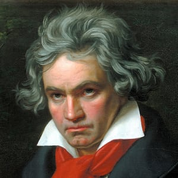

Evan Meyer
My favorite composers: Rachmaninov, Chopin, Beethoven, Mozart
Sergei Rachmaninov

Rachmaninov's music has colorful chord progressions and intricate counterpoint melodies, with an underlying driving force that is sometimes sinister.
Excerpt from Rachmaninov 2nd Piano Concerto

Excerpt from Rachmaninov 3rd Piano Concerto
My favorite Rachmaninov interpreter is Alexis Weissenberg. His use of the sustain pedal is sparse, allowing the notes to ring out clearly. This is especially important for Rachmaninov's music, as it allows the complex counterpoint melodies to be heard rather than simply treated as background harmony.

Weissenberg playing Rachmaninov's Second Piano Concerto
Weissenberg playing Rachmaninov's Third Piano Concerto
Frederic Chopin

Chopin's music lacks the underlying driving force of Rachmaninov's music, but instead is more impulsive, with frequent rubato giving a feeling of freedom.

A while back, I came up with a story to go along with Chopin's Fantasy Impromptu. A village is under attack by horsemen. The villagers drive off the horsemen, and then mourn their dead and forge armor and weapons. When the horsemen come back, they destroy the village and burn it to the ground.

I like Beethoven, particularly his later works, because they are like very deliberately crafted stories.
I first heard the Beethoven Hammerklavier performed when I was at a piano camp in New York, and it has been one of my favorite Beethoven pieces ever since then.
Mozart had a very good sense of balance in music. There is active and passive, loud and soft, fast and slow, balanced perfectly

One of my favorite Mozart piano works is the first movement of one of his B Flat Major Sonatas. I think that it really illustrates the perfect balace in Mozart's writing.